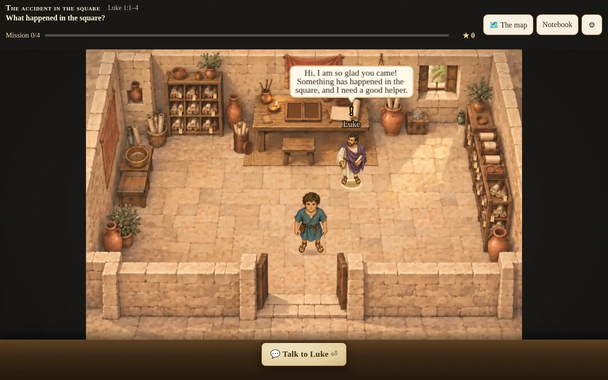
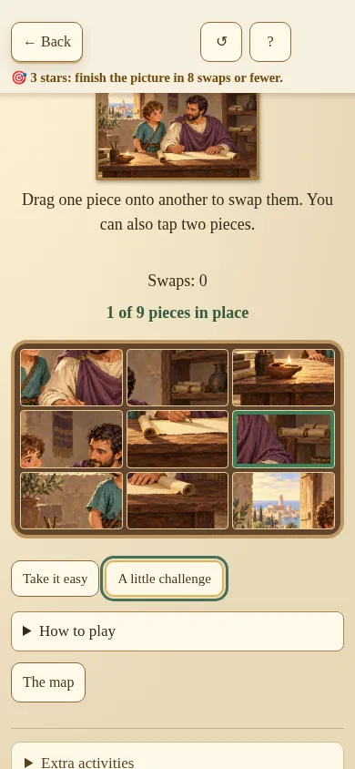
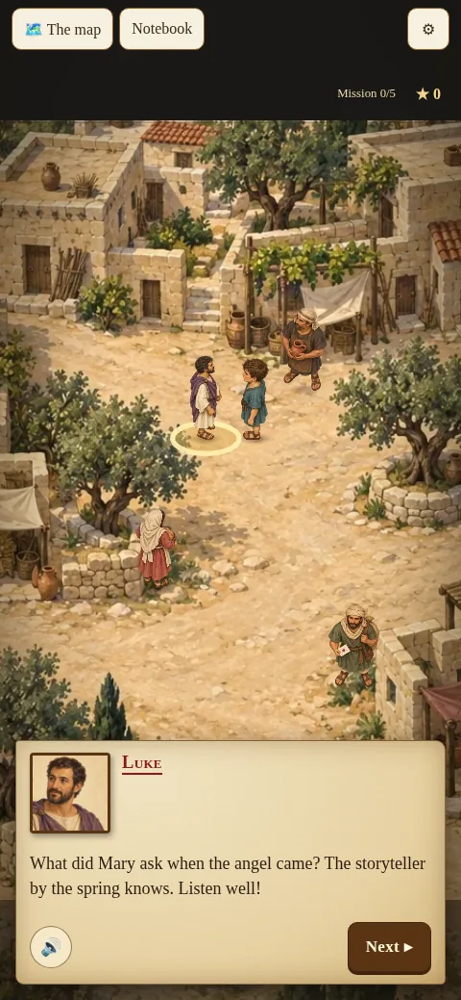
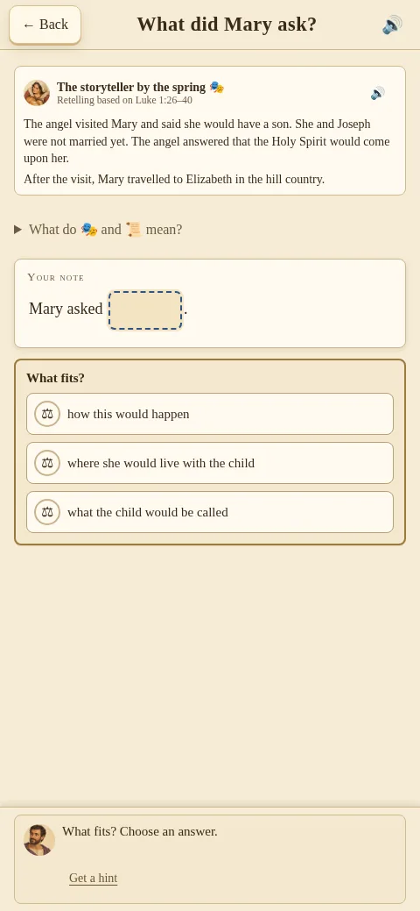
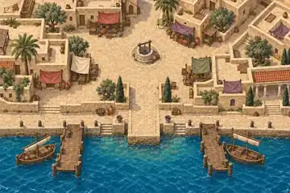

Boards to walk around
Painted places from Nazareth to Bethlehem. You walk around, talk with people and gather clues together with Luke.
The Journey with Luke
The calendar starts on Tuesday 1 December. Door 1 is free to try now.
An online Advent calendar · 1–24 December
An Advent calendar with Christian content, built on the Christmas story in Luke’s Gospel. You become the apprentice of Luke the physician, talk with people who were there, and solve one short case a day, 5–15 minutes.
Ages 8 and up, with a detective level that challenges kids well into their teens. Just as much fun for grown-ups who play along.
Door 1 is free, with no account. A code unlocks doors 2–24. Personal code: €24.99 / £19.99 / $24.99. Family code for the whole household: €49.99 / £39.99 / $49.99. Pay by card, Apple Pay or Google Pay, and get the code as soon as the payment has gone through. A one-time purchase, no subscription.
Each door is a short case to solve. The day’s task usually takes 5–15 minutes, and anyone who wants more can stay longer.

Painted places from Nazareth to Bethlehem. You walk around, talk with people and gather clues together with Luke.

Puzzles and short tasks give pauses in the story and reward those who are paying attention.

Printable sheets for each day: hunt for words, solve codes, spot the difference and talk together about the day’s story. The English sheets are at Activities.







Door 1 is a whole door, just like the other 23. Try it for free.
Free
€24.99 / £19.99 / $24.99
Less than €1.10 / 87p / $1.10 a door
€49.99 / £39.99 / $49.99
Less than €2.20 / £1.75 / $2.20 a door for the whole household
The same price as two personal codes. Everyone at home can play.
On this English site you pay in Stripe Checkout with a card, or with Apple Pay or Google Pay where those are offered. The purchase is sold by Stripe and shown as “Sold through Link”. Stripe sends the payment receipt. We send the code, by email and on the page after payment. You receive the code when the payment has gone through.
Prices in euro and pounds include VAT. The price in dollars does not include US sales tax, which Stripe adds where it applies. The checkout will show the amount you pay.
Customers in Norway can also buy on the Norwegian checkout.
The price per door is worked out for the 23 doors the code unlocks; door 1 is free. The doors open on their day in December, and after Christmas Eve they are all open. The game stays open at least until 31 January 2027. Refunds: see the terms of sale. What we store when you buy is in the privacy policy.
A gift that lasts 24 days. For ages 8 and up, well into the teens. The code is on the gift card, and the QR code on the card unlocks the game on the device the child plays on. Print the card, or send it as a PDF.
Give the gift card on the first Sunday of Advent, 29 November. Then everything is ready when the calendar starts on Tuesday 1 December.
After the purchase we send the code to the email you give. A printable gift card, already filled in with the code, is attached to that email. Print it on both sides of the sheet (flip on the long edge) and fold it in three. Does the child live somewhere else? Send the PDF to the parents.
If you would rather write the code yourself, you can download a blank gift card (PDF).
Buy as a giftGift cards with a personal code can also be bought in the shop Ordet è Ditt, Breigata 12, Stavanger, Norway. The family code is sold only on the website.
We who made the game believe that the Bible is true and can be trusted. We want children to discover that much of what it says also has a good historical basis: places, people and events that other sources and finds support. Along the way they also meet questions that historians still discuss. That is part of looking into something honestly, and such questions need not shake anyone’s trust in the Bible. Our aim is children who are secure in their faith, and who know that it can stand up to being looked into.
You pay once for the code, and then it is done. Inside the game there is no shop, no coins to buy and no offers that pop up. There is no account and no log-in, and progress is stored only on the device you play on.
Yes. Door 1 is open to everyone, with no account and no email. You can try the game before you decide.
The code unlocks doors 2–24. The doors open on their day in December, and after Christmas Eve they are all open. The game stays open at least until 31 January 2027. It is a one-time purchase: no subscription and no purchases inside the game.
At midnight, by the clock on the device the child plays on.
A personal code (€24.99 / £19.99 / $24.99) is for one person. A family code (€49.99 / £39.99 / $49.99) is for the whole household, that is everyone who lives in the same home, and may be entered on all the devices you have at home.
Yes. The gift card with the code comes as a PDF with the email. Does the child live somewhere else? Send the PDF by email or message to the parents. They can print it, or scan the QR code straight from the screen. Share the card only with the person the gift is for. If you give to children, grandchildren or someone you know in several homes, each home needs its own code.
Easiest: open the link in the email, or scan the QR code on the gift card, on the device the child will play on. To type the code yourself: tap the cog ⚙ on the start page and “Enter code”. Enter the code and tap “Unlock”. If you want the game in English, choose English under Language in the same menu first.
On this English site you pay in Stripe Checkout with a card, or with Apple Pay or Google Pay where those are offered. The purchase is shown as “Sold through Link”. Stripe sends the payment receipt. We send the code when the payment has gone through. Customers in Norway can also use the Norwegian checkout.
The game is for ages 8 and up, well into the teens. Younger players can take part together with an adult or an older sibling, and all the cards can be read aloud.
Yes. The game runs in the browser on a phone, a tablet and a computer, with nothing to install. A new door needs the internet the first time it is opened. After that it can be played offline on the same device. On iPhone and iPad, iOS 16.4 or later is needed.
The game sends nothing about the child. How far the child has come, and the answers in the game, are stored only in the browser on the device the child plays on. There is no account, no log-in and no statistics in the game. There is more in the privacy policy.
Then the doors up to and including today’s date are open at once, and a new door opens each day through to Christmas Eve. You can catch up with the days when it suits you.
Yes, but the game has no profiles, so people who share a device also share the progress. If each player is to have their own journey, they can use their own device or browser.
See the terms of sale. When you buy on this English site, Stripe is the seller of the payment. Customers can contact Link support to request a refund. If something does not work, you can also write to us.
The game is made on a Christian foundation and takes the Bible seriously. At the same time it practises something everyone can use: asking good questions and testing what you hear. Everyone is welcome to take part.
We believe that the Bible is true and can be trusted. With the game we want to show that much of what the Bible tells also has a good historical basis. Read more.
Yes. In the game menu you can choose English. The printable activity sheets are also in English.
Email: lihai260 (at) hotmail.com
Phone: +47 951 45 892
We reply as soon as we can. Do not send a card number or BankID details by email.